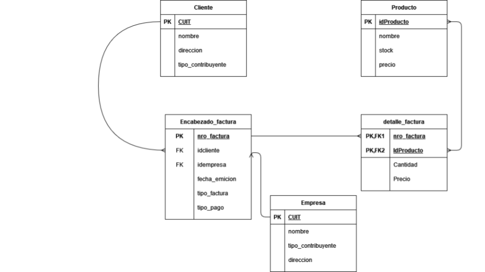

Clase 5 - El lenguaje estándar SQL
Objetivos de Aprendizaje
Identificar 3 sentencias principales de definición de base de datos del lenguaje SQL.
Asociar cada elemento de un DER con la sentencia SQL correspondiente para crear tablas.
Identificar claves primarias y foráneas en un DER y crearlas utilizando la sentencia CREATE de SQL.
Asociar los dominios de los atributos en un DER y las restricciones de columnas y como se implementan al crear las tablas con SQL.
Borrar tablas de base de datos utilizando DROP.
Modificar tablas de base de datos utilizando ALTER.
Slides
Ejercicios
Crear el siguiente diagrama como base de datos.
DER

Dominio de los atributos
Cliente
CUIT entero
NOMBRE varchar(100)
DIRECCION varchar(150)
TIPO_CONTRIBUYENTE entero
Empresa
CUIT entero
NOMBRE varchar(100)
DIRECCION varchar(150)
TIPO_CONTRIBUYENTE entero
Producto
IDPRODUCTO entero
NOMBRE varchar(100)
STOCK entero
PRECIO decimal
Encabezado_Factura
NROFACTURA entero
IDCLIENTE entero
IDEMPRESA entero
TIPO_FACTURA varchar(1)
TIPO_PAGO entero
FECHA_EMISION fecha
Detalle_factura
NROFACTURA entero
IDPRODUCTO entero
CANTIDAD entero
PRECIO decimal
Una vez creado descarguen el esquema de la base de datos y subanlo al campus en la entrega de tarea de la clase 5.
Esta es una plantilla del documento compartido utilizando google slides. Es el mismo archivo para toda la clase.
Ejercicios de práctica extra
Para cada diagrama:
Crear la base de datos.
Definir el dominio de los distintos atributos
Definir correctamente las PK y FK de cada tabla.
Cargar 5 registros para cada tabla utilizando los datos provistos. Opcional, pueden dejarlo para la semana que viene cuando revisemos mejor este tema.
Exportar el SQL y subirlo al foro de la Clase 5.
Ejercicio 1
Pinguinos: Medidas de tamaño de pingüinos adultos en busca de comida cerca de la estación Palmer en la Antártica.

Ejercicio 2
Bateadores: estadísticas de bateadores de beisbol.

Ejercicio 3
Alojamiento: datos de AirBnB en Buenos Aires.

Lecturas sugeridas
- Modulo 4 del libro Bases de datos. Rafael Camps Paré, Luis Alberto Casillas Santillán, Dolors Costal Costa, Marc Gibert Ginestà, Carme Martín Escofet, Oscar Pérez Mora. ISBN: 84-9788-269-5.